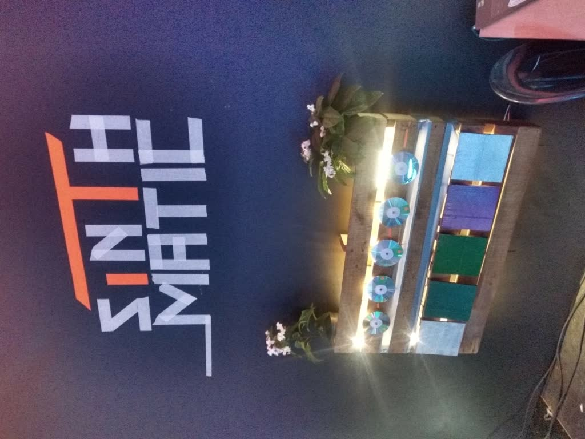
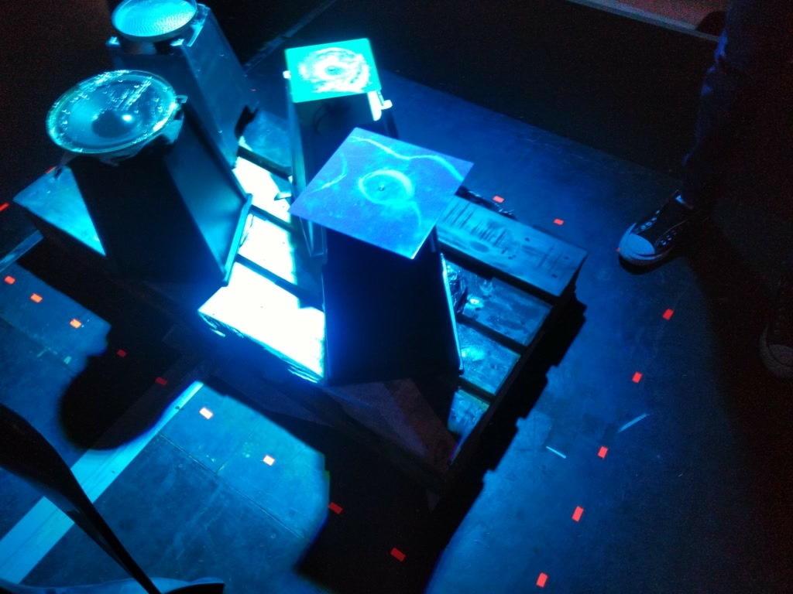
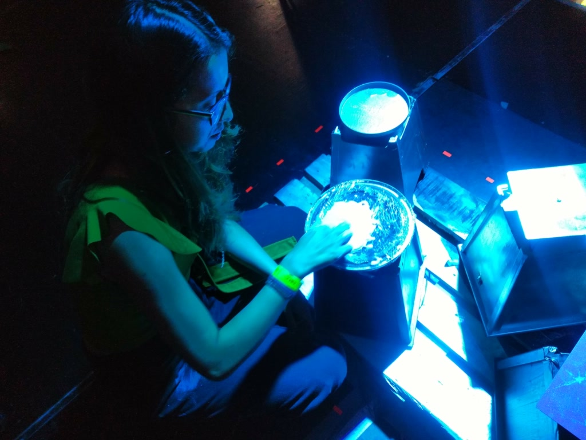
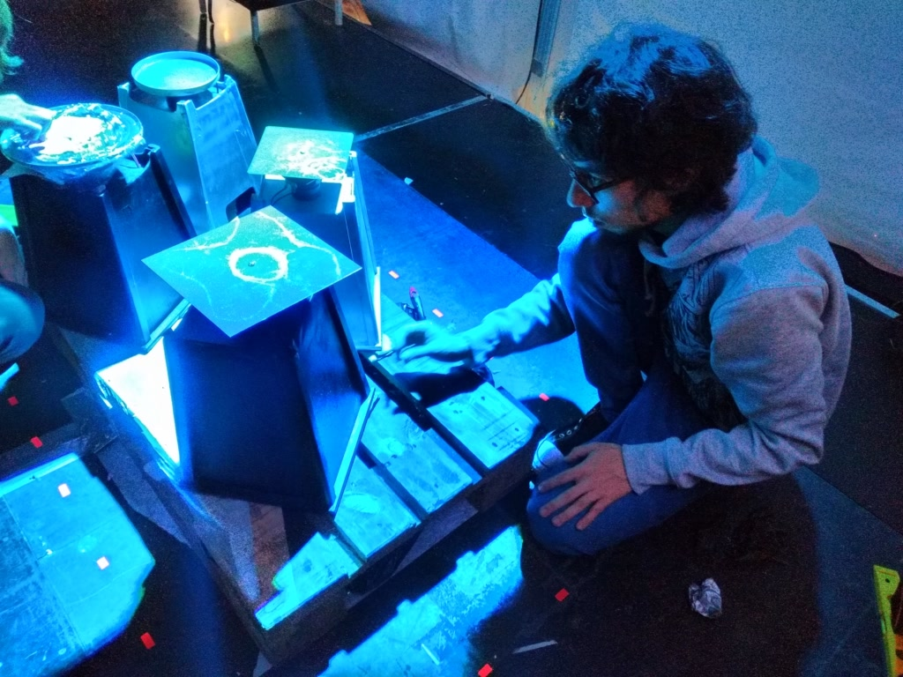
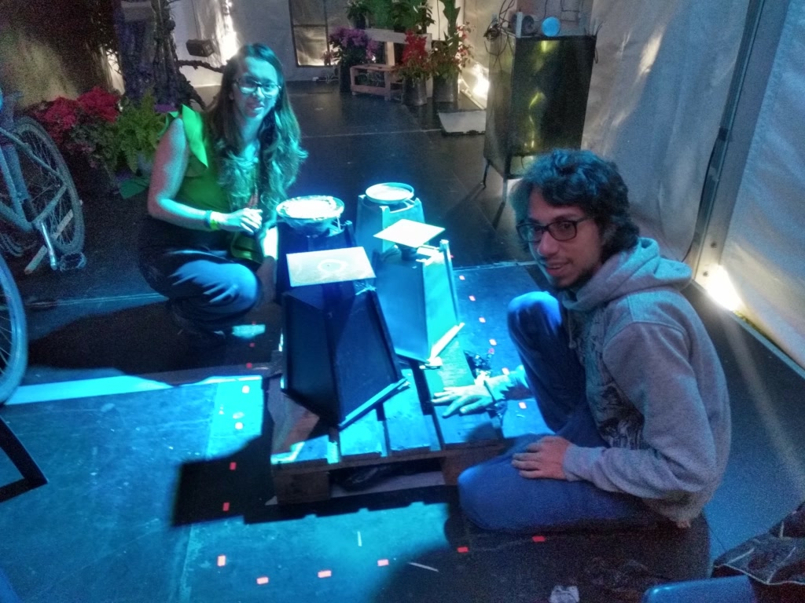
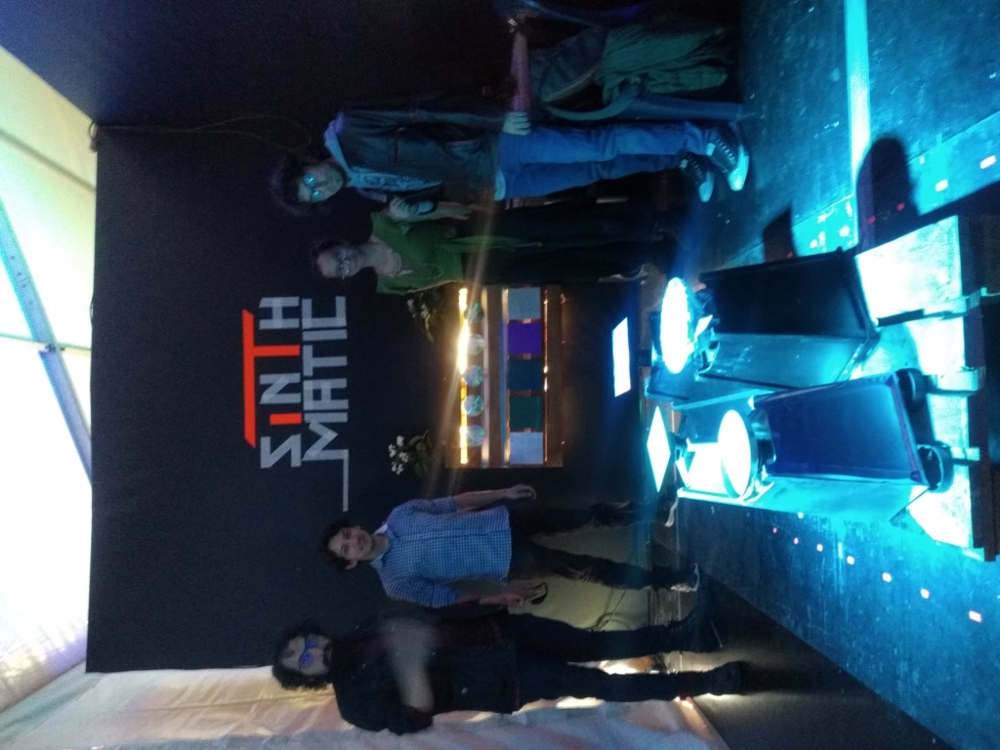
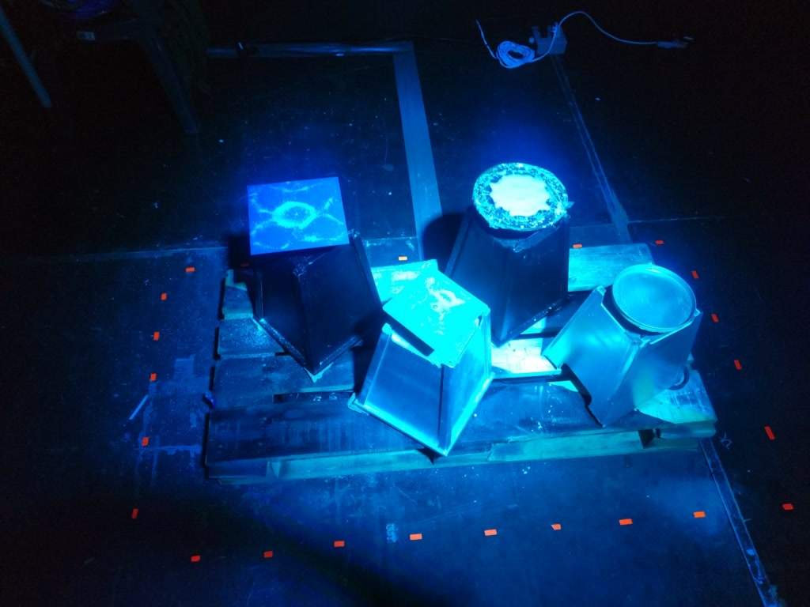
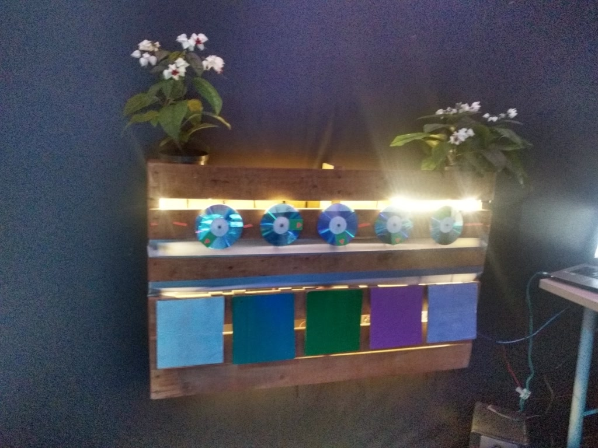
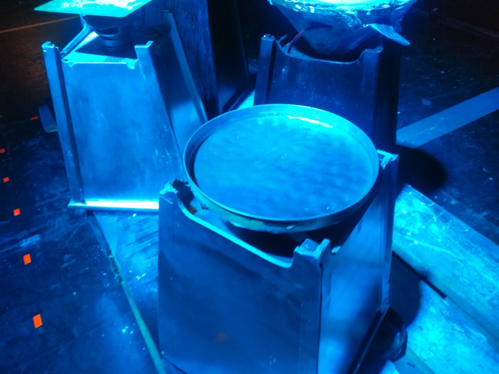

SinthMatic
- Date
- October 2019
- Venue
- 2019 Crea Art Festival, Bogotá
- Role
- Programmer (collective installation)
- Technologies
- Arduino
- Credits
- Juliana Ortigoza, Luis Eduardo Lozano, Eddie Borbón, Ricardo Dueñas, David Gutiérrez.

Interactive sound installation presented at the 2019 Crea Art Festival.







